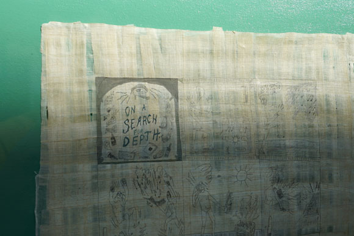
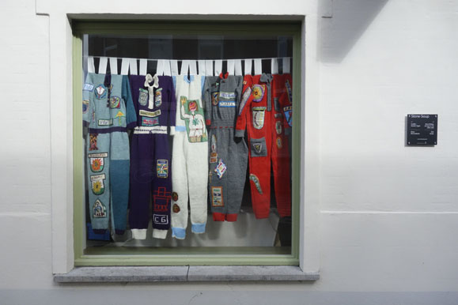

Evenementen
De Stone Soup openingsmomenten zijn een aanzet tot een actieve dialoog tussen kunstenaars, bewoners, passanten, een kruispunt, de stad. We erkennen hierbij de diversiteit in de buurt en trachten deze openlijk te vieren. Het op straat delen van de soep hanteren we als ‘ijsbreker’ waarbij makkelijker een gesprek wordt aangeknoopt met iedereen die een nieuwsgierige blik in de richting van de lichtbak werpt.
Meer foto's op Facebook.
Opening #12 — 24 september 2016

Opening #11 — 26 maart 2016

Opening #10 — 26 september 2015
Foto's: Frederik Sadones
Opening #09 — 15 april 2015

Foto's: Trui Hanoulle en Boutique Vizique
Opening #08 — 4 oktober 2014
Opening #07 — 25 januari 2014
Foto's: Dominique Dierick